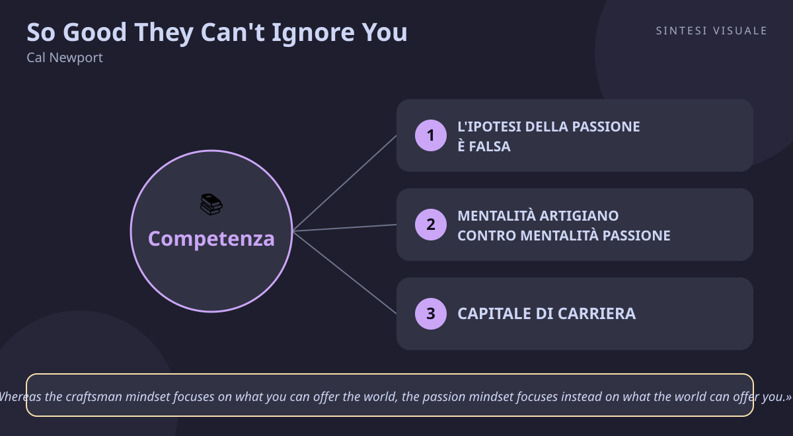

Home / Libri / So Good They Can't Ignore You

So Good They Can't Ignore You
Cal Newport · Carriera
«So Good They Can't Ignore You»
- Basta passione
- Mentalità artigiano
- Capitale di carriera
- Piccole scommesse
🧭Introduzione
Cal Newport non è un guru motivazionale: è un professore di informatica (PhD al MIT, cattedra a Georgetown), all'epoca anch'egli alle prese con la domanda che tormenta tanti ventenni e trentenni: "ma io qual è la mia passione?". La sua urgenza era smascherare un consiglio che sentiva ripetere ovunque — "segui la tua passione e il resto verrà da sé" — e che vedeva produrre solo ansia e salti continui da un lavoro all'altro. Uscito il 18 settembre 2012 da Grand Central Publishing (288-304 pagine a seconda dell'edizione), il libro è diventato il manifesto controintuitivo della carriera: il titolo cita il consiglio che il comico Steve Martin dava agli aspiranti artisti.
Perché conta oggi: viviamo nell'epoca del "molla tutto e segui i tuoi sogni" raccontato su Instagram e TikTok, con cambi di lavoro continui e burnout da insoddisfazione. Newport ribalta il tavolo: la passione non si trova, si costruisce — dopo essere diventati bravi in qualcosa di raro e prezioso.
A chi è utile: a chi sceglie gli studi o il primo lavoro, a chi è frustrato dal lavoro attuale e sogna di cambiare, a freelance e professionisti che vogliono più autonomia, e a chiunque tema di "non avere una vera passione".
📘Riassunto
La scintilla centrale: inseguire una passione preesistente non è la strada per amare il proprio lavoro — è spesso la trappola che impedisce di costruirlo; il lavoro che ami è quello che ti sei guadagnato diventando così bravo da poterlo pretendere.
La struttura logica procede in quattro regole:
- Regola 1: non seguire la passione — l'"ipotesi della passione" (più una passione è abbinata al lavoro, più ami il lavoro) è falsa: le passioni preesistenti sono rare, e la ricerca della felicità sul lavoro dipende da altro — creatività, impatto e controllo, come mostra la teoria dell'autodeterminazione (autonomia, competenza, relazione).
- Regola 2: diventa così bravo che non possono ignorarti — adotta la mentalità artigiano, accumula "capitale di carriera" (competenze rare e preziose) con la pratica deliberata.
- Regola 3: rifiuta una promozione (cerca il controllo) — il controllo su cosa fai e come lo fai è l'elisir del lavoro dei sogni, ma va chiesto al momento giusto: evita le due trappole del controllo e rispetta la legge della sostenibilità finanziaria.
- Regola 4: pensa in piccolo, agisci in grande — la missione nasce dopo, dai margini del possibile: piccole scommesse, legge della memorabilità e pazienza.
Il punto di svolta: la distinzione tra mentalità artigiano e mentalità passione. Il lettore capisce che la domanda giusta non è "cosa mi offre il mondo?" ma "cosa offro io al mondo?": chi smette di chiedersi se il lavoro è "quello giusto" e inizia a diventare oggettivamente bravo, ribalta il rapporto di forza con il mercato.
L'eredità oggi: il libro ha introdotto nel linguaggio comune concetti come "career capital" e "craftsman mindset", ripresi poi dallo stesso Newport in Deep Work e Digital Minimalism; è diventato il testo di riferimento di chi difende la competenza contro la retorica del "fai ciò che ami".
💡Concetti chiave
- L'ipotesi della passione è falsa: le passioni preesistenti sono rare e c'entrano poco con l'amare il proprio lavoro.
- Mentalità artigiano contro mentalità passione: chiediti cosa offri tu, non cosa ti deve dare il lavoro.
- Capitale di carriera: creatività, impatto e controllo si comprano solo con competenze rare e preziose.
- Pratica deliberata: si migliora solo con sforzo mirato fuori dalla zona di comfort e feedback onesto.
- Le due trappole del controllo: chiedere autonomia troppo presto fallisce; chiederla tardi incontra resistenze — serve la prova del mercato.
- Missione: pensa in piccolo, agisci in grande: le grandi missioni nascono da piccole scommesse ai margini del possibile, non da proclami.
📖1. L'ipotesi della passione è falsa
- Definizione l'idea che basti abbinare il lavoro a una passione preesistente per essere felici è smentita dai fatti: pochi hanno passioni chiare e spendibili, e chi ama il proprio lavoro (contadini biologici, sceneggiatori, programmatori intervistati da Newport) quasi mai ha "seguito la passione" — la passione è arrivata dopo, come effetto collaterale della bravura.
- Esempio uno studente che ama i videogiochi decide "farò il game designer per passione", ma scopre che disegnare livelli 10 ore al giorno sotto scadenze non assomiglia per nulla al giocare: dopo un anno è demotivato e ricomincia da zero in un altro campo, ripetendo il ciclo.
- Come applicarlo (a) smetti di scavarti dentro alla ricerca della "vera chiamata"; (b) chiediti invece "in cosa posso diventare oggettivamente utile e raro nei prossimi 2-3 anni?"; (c) verifica con i fatti: quella competenza la paga davvero qualcuno?
- Errore comune credere che Steve Jobs abbia seguito la sua passione (i discorsi di laurea compresi): Newport mostra che Jobs all'inizio inseguiva business e tecnologia, e la "passione" per il design e la spiritualità è confluita dopo — confondere il racconto a posteriori con il metodo.
- Collegamento la Self-Determination Theory di Deci e Ryan (autonomia, competenza, relazione come veri motori della motivazione) — la stessa base a cui attinge Daniel Pink in Drive.
📖2. Mentalità artigiano contro mentalità passione
- Definizione la mentalità passione chiede "cosa può offrire a me questo lavoro?" e rende iper-sensibili a ogni fastidio; la mentalità artigiano chiede "cosa posso offrire io al mondo?" e sposta il fuoco su qualità, pratica e contributo — è il fondamento per costruire un lavoro che ami.
- Esempio due impiegati con la stessa mansione noiosa: il primo passa le giornate a lamentarsi che "non è il lavoro dei miei sogni", il secondo decide di diventare il migliore nel risolvere i casi difficili dei clienti e in un anno si conquista stima, responsabilità e richieste dal mercato.
- Come applicarlo (a) per una settimana annota ogni pensiero "questo lavoro non mi dà..."; (b) riformulalo in "cosa posso migliorare oggi nel mio output?"; (c) scegli un metro di qualità visibile (recensioni, pezzi finiti, errori ridotti) e inseguilo per 90 giorni.
- Errore comune usare la mentalità artigiano come scusa per restare in un lavoro tossico per sempre — Newport pone tre paletti: se il lavoro non permette di sviluppare competenze rare, se produce qualcosa che ritieni dannoso, o se ti costringe con persone che detesti, è il segnale di cambiare.
- Collegamento Carol Dweck (Mindset): la mentalità di crescita ("posso migliorare") contro quella fissa ("o ho talento o no"); l'artigiano è crescita applicata al mestiere.
📖3. Capitale di carriera
- Definizione le caratteristiche del lavoro dei sogni (creatività, impatto, controllo) sono rare e preziose, e per la legge di domanda e offerta si ottengono solo offrendo in cambio competenze altrettanto rare e preziose: questo "gruzzolo" di abilità spendibili è il capitale di carriera.
- Esempio un grafico generico che "sa usare Photoshop" è sostituibile e non può dettare condizioni; un grafico che sa progettare interfacce per app mediche (raro + richiesto) può chiedere orari liberi, scegliere i clienti e farsi pagare il doppio.
- Come applicarlo (a) elenca cosa sai fare e chiediti "quanti lo sanno fare al mio livello nella mia zona/settore?"; (b) punta al quadrante raro-e-prezioso con un piano di 12-18 mesi; (c) verifica la rarità con segnali di mercato (offerte, richieste, quanto ti trattengono).
- Errore comune accumulare competenze rare ma inutili (il virtuosismo fine a sé stesso) oppure preziose ma comunissime (tutti le hanno): il capitale nasce solo dall'incrocio dei due assi.
- Collegamento James Clear (Atomic Habits): il capitale si accumula come gli interessi composti — piccoli miglioramenti quotidiani che il mercato prima ignora e poi paga a caro prezzo.
📖4. Pratica deliberata
- Definizione il capitale di carriera non nasce dall'esperienza che passa da sola, ma dalla pratica deliberata: sforzo concentrato appena oltre le capacità attuali, con obiettivi precisi e feedback immediato e onesto — scomoda per definizione, perché fare ciò che sai già fare bene è piacevole, ma è l'opposto di migliorare.
- Esempio un venditore che a fine giornata rivede le tre chiamate andate male, trascrive le obiezioni e prova ad alta voce tre risposte diverse, migliora in un trimestre più di un collega con dieci anni di "esperienza" fatta di chiamate tutte uguali e mai analizzate.
- Come applicarlo (a) ritaglia 60-90 minuti al giorno per l'allenamento mirato (non per "produrre", ma per migliorare il punto debole); (b) datti un metro e un giudice (mentore, dati, registrazione); (c) accetta il disagio: se è comodo, probabilmente non stai crescendo.
- Errore comune scambiare le ore di presenza per pratica ("lavoro da 5 anni, quindi sono esperto") o fuggire nello pseudo-lavoro rassicurante (email, riunioni, corsi guardati a metà) invece dell'esercizio scomodo.
- Collegamento Anders Ericsson (lo psicologo del "lavoro intenzionale" citato da Newport) e lo stesso Deep Work: senza concentrazione senza distrazioni la pratica deliberata è impossibile.
📖5. Le due trappole del controllo
- Definizione il controllo su cosa fai e come lo fai è il premio più potente, ma ha due trappole: chiederlo senza capitale (nessuno te lo concede in modo duraturo) e chiederlo quando sei diventato prezioso (il datore resiste e l'ambiente ti frena). La bussola è la legge della sostenibilità finanziaria: persegui un aumento di autonomia solo se hai prove che qualcuno è disposto a pagarti per ciò che ne risulta.
- Esempio il dipendente che dal nulla chiede 4 giorni di smart working "perché sono più creativo a casa" senza risultati speciali alle spalle viene respinto (trappola 1); il programmatore chiave che lo chiede dopo aver consegnato il progetto più difficile viene trattenuto con controfferte e sensi di colpa (trappola 2) — lo ottiene solo chi porta prove che il nuovo assetto produce valore pagato dal mercato.
- Come applicarlo (a) prima di chiedere più controllo, accumula prove (clienti, numeri, offerte esterne); (b) testa in piccolo (un giorno, un progetto pilota); (c) chiediti "se dicessero di no, il mercato mi darebbe comunque ragione?".
- Errore comune l'eroismo da salto nel vuoto ("molto tutto e apro il blog") senza rete di capitale — romantico su Instagram, disastroso in banca; oppure, all'opposto, non chiedere mai più controllo per paura, anche quando il capitale c'è.
- Collegamento Nassim Taleb (opzionalità e antifragilità: piccole scommesse reversibili prima dei grandi salti); Daniel Pink (Drive): l'autonomia motiva, ma va conquistata.
📖6. Missione: pensa in piccolo, agisci in grande
- Definizione le missioni che cambiano una carriera non si trovano pensandoci in grande da fermi, ma nascono nel "possibile adiacente": il margine di ciò che sai fare oggi. Servono capitale (per avere credibilità), tentativi sistematici e piccoli (scommesse esplorative) e la legge della memorabilità: un'idea decolla se spinge la gente a parlarne.
- Esempio un insegnante appassionato di didattica non proclama "rivoluzionerò la scuola", ma prova un formato di video-lezioni da 5 minuti per le sue classi, poi per la scuola, poi online: dopo due anni di piccole scommesse ha un canale seguito e una missione vera — nata dai tentativi, non dal manifesto iniziale.
- Come applicarlo (a) definisci una direzione provvisoria, non una missione eterna; (b) lancia ogni mese una piccola scommessa reversibile (articolo, prototipo, corso pilota); (c) raddoppia solo su ciò che genera segnali reali (richieste, condivisioni, pagamenti).
- Errore comune il manifesto prematuro ("la mia missione è cambiare il mondo") senza capitale né tentativi — produce grandi annunci e zero progressi; oppure restare fermi ad aspettare l'ispirazione invece di scandagliare il possibile adiacente.
- Collegamento Eric Ries (Lean Startup): il ciclo costruisci-misura-impara applicato alla carriera; Steven Johnson (Where Good Ideas Come From): l'innovazione vive ai margini di ciò che è già possibile.
💬Citazioni da ricordare
"Whereas the craftsman mindset focuses on what you can offer the world, the passion mindset focuses instead on what the world can offer you." — la frase-madre del libro: tutto il metodo nasce dal ribaltare la domanda da "cosa mi dà?" a "cosa do?".
"Put aside the question of whether your job is your true passion, and instead turn your focus toward becoming so good they can't ignore you." — l'invito operativo: smetti di interrogare la passione e inizia ad allenare la bravura, il resto segue.
"If your goal is to love what you do, you must first build up 'career capital' by mastering rare and valuable skills, and then cash in this capital for the traits that define great work." — la formula in una riga: prima accumula, poi riscuoti in autonomia, impatto e creatività.
🌍Esempi di oggi
- Il cugino che vuole "vivere di viaggi". Apre il terzo profilo da travel blogger in due anni, ma senza competenze rare (fotografia, scrittura, SEO, accordi commerciali) nessun brand lo paga: insegue la passione senza capitale e resta al punto di partenza — prima la bravura pagabile, poi la libertà.
- La collega che ottiene il part-time verticale. Per tre anni è diventata l'unica a saper gestire i clienti difficili e i dati del reparto: quando chiede due giorni da casa, l'azienda dice sì perché perderla costerebbe di più — il controllo non si chiede, si compra con la rarità.
- L'amico sviluppatore "senza passione". Non sognava il codice da bambino, ma si è allenato ogni giorno su problemi difficili, ha accumulato capitale e ora sceglie progetti, orari e compensi — e scopre di amare il suo lavoro proprio perché lo padroneggia.
🛠️Azioni pratiche
- L'inventario del capitale (30 minuti, una volta): elenca le tue 5 competenze principali e per ciascuna dai due voti da 1 a 5 (rarità, valore di mercato). Individua il buco più promettente: la competenza che con 3 mesi di allenamento mirato può diventare rara E pagata.
- Il blocco dell'artigiano (60 minuti al giorno per 5 giorni): ogni giorno un'ora di pratica deliberata sul punto debole (non produzione, allenamento), con quaderno degli errori e un feedback esterno a fine settimana (mentore, collega esperto, cliente sincero).
- La piccola scommessa (2 ore nel weekend): definisci una direzione provvisoria per i prossimi 6 mesi e lancia un esperimento reversibile da completare in 30 giorni (articolo, prototipo, mini-servizio a pagamento, candidatura mirata). Se nessuno lo nota o lo vuole, archivialo e passa alla scommessa successiva.
💎Da portare a casa
Non chiederti se il tuo lavoro è la tua passione: diventa così bravo che il mercato non può ignorarti — la passione è il premio, non il punto di partenza.
💬Approfondimento in chat
Rispondi con il numero (1-6) del concetto che vuoi espandere ulteriormente, oppure con un tema a cui vuoi dedicare il prossimo libro: public speaking, vendite, negoziazione, stress, emozioni, carriera...
🖼️In un colpo d’occhio

Tocca l’immagine per ingrandirla.